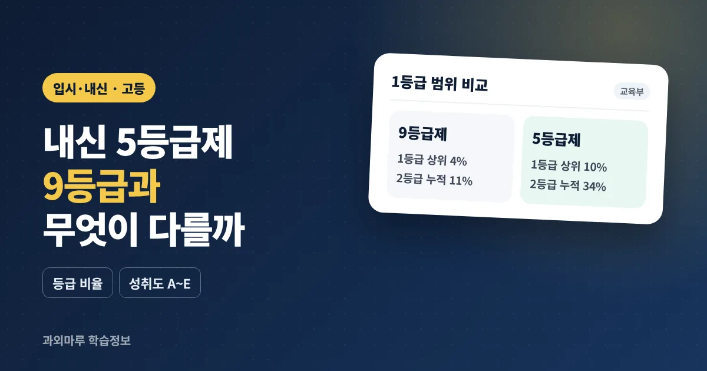

- 2025학년도 고1부터 5등급제 적용, 1등급 상위 10% · 2등급 누적 34% · 3등급 누적 66%
- 학생부에 원점수/과목평균, 성취도(A~E), 성취도별 분포비율, 석차등급, 수강자수 기록
- 사회·과학 융합선택 9과목, 과학탐구실험, 체육·예술 등은 석차등급이 산출되지 않음
고등학교 내신 5등급제는 무엇이 달라졌나요?
내신 5등급제는 같은 과목을 들은 학생들의 석차에 따라 1~5등급을 매기는 상대평가 방식으로, 2025학년도 고1부터 적용되고 있습니다. 기존 9등급제보다 등급 구간이 넓어졌고, 절대평가 성취도(A~E)를 함께 기록합니다.
석차등급은 과목 수강자 중 내 석차가 상위 몇 %인지에 따라 정해지는 등급을 말합니다. 교육부는 2028 대입 개편안을 발표하며 "1등급 비율이 단 4%에 불과하였던 현재 내신 9등급제는 교실 안에서의 과도한 경쟁을 유발"한다고 설명했고, 고교학점제와 함께 5등급 체제로 바꾸었습니다.
주의할 점은 학년에 따라 적용 제도가 다르다는 것입니다. 2026학년도 기준으로 고1·2학년은 2022 개정 교육과정과 5등급제를, 고3학년은 2015 개정 교육과정과 9등급제를 적용받고 있습니다. 형제자매의 성적표와 비교할 때 이 차이를 알아 두면 혼동이 줄어듭니다.
내신 5등급 1등급은 상위 몇 %인가요? 9등급제와 비교하면?
5등급제에서 1등급은 상위 10%로, 9등급제의 1등급(상위 4%)보다 2.5배 넓습니다. 9등급제의 1~2등급(누적 11%)과 비슷한 범위가 5등급제의 1등급에 해당한다고 볼 수 있습니다.
| 5등급제 | 누적 비율 | 9등급제 | 누적 비율 |
|---|---|---|---|
| 1등급 | 10% | 1등급 / 2등급 | 4% / 11% |
| 2등급 | 34% | 3등급 / 4등급 | 23% / 40% |
| 3등급 | 66% | 5등급 / 6등급 | 60% / 77% |
| 4등급 | 90% | 7등급 / 8등급 | 89% / 96% |
| 5등급 | 나머지 10% | 9등급 | 나머지 4% |
표의 9등급제 칸은 비율 비교를 돕기 위해 나란히 놓은 것이며, 두 등급이 그대로 바뀌어 대응한다는 뜻은 아닙니다. 예를 들어 수강자가 200명인 과목이라면(예시) 9등급제에서는 약 8명이 1등급이었지만 5등급제에서는 약 20명이 1등급이 됩니다.
등급 구간이 넓어지면서 한두 문제 차이로 등급이 바뀌는 부담은 줄었습니다. 반대로 같은 1등급 안에서도 원점수와 성취도 차이가 생기기 때문에 성적표의 다른 항목도 함께 보는 것이 중요해졌습니다.
성취도 A~E와 성취도별 분포비율은 어떻게 읽나요?
성취도는 원점수에 따른 성취율로 정하는 절대평가 결과이고, 성취도별 분포비율은 그 과목에서 A~E를 받은 학생이 각각 몇 %인지를 보여 주는 항목입니다. 같은 1등급이라도 과목마다 A 비율이 다르므로 함께 보는 것이 좋습니다.
교육청 학업성적관리 시행지침과 고교학점제 지원센터 안내에 따른 성취도 기준은 다음과 같습니다.
| 성취도 | 일반 과목 (성취율) | 비고 |
|---|---|---|
| A | 90% 이상 | - |
| B | 80% 이상 90% 미만 | - |
| C | 70% 이상 80% 미만 | - |
| D | 60% 이상 70% 미만 | - |
| E | 60% 미만 | 공통과목은 40% 이상 60% 미만 |
공통과목에서 성취율이 40%에 못 미치면 학교의 최소 성취수준 지도를 이수해야 학점을 받을 수 있습니다. 체육·예술 일반선택과 과학탐구실험은 A·B·C 3단계(80% 이상 A, 60% 이상 B)로, 교양 과목은 P로 기록됩니다.
성취도별 분포비율은 2022 개정 교육과정부터 새로 기재되는 항목입니다. 예를 들어 어떤 과목에서 A 비율이 40%(예시)라면 시험이 비교적 쉬웠다고 짐작할 수 있고, A 비율이 10%(예시)라면 A를 받기 어려운 과목이었다고 볼 수 있습니다.
내신 등급은 학생부에 어떻게 기록되나요?
2022 개정 교육과정을 적용받는 고1·2 학생부에는 과목별로 원점수/과목평균, 성취도, 성취도별 분포비율, 석차등급, 수강자수가 학기말에 기록됩니다. 9등급제 시기와 비교하면 표준편차가 빠지고 분포비율이 새로 들어갔습니다.
| 항목 | 2022 개정 (5등급제) | 2015 개정 (9등급제) |
|---|---|---|
| 원점수/과목평균 | 기록 | 기록 (표준편차 함께) |
| 성취도 | A~E | A~E (수강자수 함께) |
| 성취도별 분포비율 | 기록 (새로 추가) | - |
| 석차등급 | 1~5등급 | 1~9등급 |
| 수강자수 | 기록 | 기록 |
교육부 학교생활기록부 종합지원포털 답변에 따르면 석차 자체는 학교 내부 성적일람표에는 있지만 학생부에는 기재되지 않습니다. 즉 대학이 보는 것은 석차 숫자가 아니라 등급과 성취도, 원점수 등입니다. 성적표 각 항목의 뜻은 성적표 보는 법 글에서도 확인할 수 있습니다.
석차등급이 나오지 않는 과목도 있나요?
네. 사회·과학 융합선택 9과목, 과학탐구실험, 체육·예술 일반선택, 교양 과목은 석차등급을 산출하지 않습니다. 이런 과목은 석차등급란에 '·'이 표시됩니다.
- 사회 융합선택 — 여행지리, 역사로 탐구하는 현대 세계, 사회문제 탐구, 금융과 경제생활, 윤리문제 탐구, 기후변화와 지속가능한 세계
- 과학 융합선택 — 과학의 역사와 문화, 기후변화와 환경생태, 융합과학 탐구
- 기타 — 과학탐구실험, 체육·예술 일반선택, 교양, 공동교육과정·온라인학교 개설 과목 등
반대로 진로선택 과목은 2022 개정 교육과정에서 공통·일반선택과 마찬가지로 5등급이 산출됩니다(고교학점제 지원센터 안내). 2015 개정 교육과정의 진로선택 과목이 성취도만 기록되던 것과 다른 점입니다.
석차등급을 산출하는 과목이라도 수강자가 매우 적으면 등급을 표시하지 않을 수 있습니다. 교육부 「학교생활기록 작성 및 관리지침」은 수강자가 5명 이하인 경우의 기재 방법을 따로 정하고 있으므로, 소인수 과목을 고를 때는 학교 안내를 확인하는 것이 좋습니다.
동점자가 많으면 등급은 어떻게 나뉘나요?
동점자가 등급 경계에 걸리면 중간석차를 적용한 중간석차백분율로 등급을 매깁니다. 그래서 동점자가 많은 과목은 등급 인원이 비율과 정확히 맞지 않을 수 있습니다.
부산광역시교육청 2026학년도 고등학교 학업성적관리 시행지침은 "학교는 동점자 발생을 최소화하기 위해 동점자 처리 방법을 학업성적관리규정으로 정한다"고 하고, 그럼에도 등급 경계에 동점자가 생기면 중간석차백분율로 등급을 부여하도록 하고 있습니다. 각 등급의 누적 인원은 수강자수에 누적 비율을 곱해 반올림해 구합니다.
시험이 쉬워 만점자나 고득점 동점자가 많아지면 등급 구간이 기대와 다르게 나뉠 수 있습니다. 동점자 처리 세부 기준은 학교 학업성적관리규정에 있으므로 학기 초 학교 안내를 확인해 주세요.
내신 5등급제, 대학은 어떻게 반영하나요?
대학에는 석차등급(1~5), 성취도(A~E), 성취도별 분포비율 등이 함께 제공되며, 이를 어떻게 환산해 반영할지는 대학마다 다릅니다. 지원하려는 대학의 모집요강을 직접 확인해야 합니다.
한국대학교육협의회가 발표한 2028학년도 대학입학전형시행계획 주요사항에 따르면 수시 모집 비중은 80.8%이고, 이 가운데 학생부교과전형이 45.3%, 학생부종합전형이 24.3%입니다. 내신 성적이 여전히 대입에서 중요한 자료라는 뜻입니다. 다만 내신 등급을 점수로 바꾸는 공통 기준은 없으므로, 학년이 올라가며 관심 대학의 전형 계획을 하나씩 확인하는 것이 현실적입니다.
학부모가 확인할 체크리스트
- 학기 초 평가 계획 — 과목별 지필·수행평가 비율과 일정을 확인합니다.
- 성적표 항목 함께 보기 — 등급만 보지 말고 원점수, 성취도, 분포비율을 같이 봅니다.
- 공통과목 기초 — 공통과목은 성취율 40% 이수 기준이 있으므로 기초 단원 결손을 일찍 확인합니다.
- 과목 선택 — 석차등급이 나오는 과목과 나오지 않는 과목을 구분해 진로와 함께 고려합니다.
- 대학 모집요강 — 고2부터 관심 대학의 내신 반영 방법을 확인합니다.
고1 공통과목 준비는 예비 고1 겨울방학 총정리, 시험 준비 흐름은 내신 시험 4주 공부 계획에서 볼 수 있습니다. 1:1 수업에서는 일반적으로 성적표의 원점수와 성취도를 함께 보고, 등급보다 실점한 단원을 먼저 찾는 방식으로 진행하는 경우가 많습니다.
자주 묻는 질문
내신 5등급제는 언제부터 적용되나요?
2025학년도 고등학교 1학년부터 적용되고 있습니다. 2026학년도 기준으로 고1·2학년은 5등급제, 고3학년은 기존 9등급제를 적용받습니다.
내신 5등급제에서 1등급은 몇 %인가요?
1등급은 상위 10%입니다. 2등급은 누적 34%, 3등급은 누적 66%, 4등급은 누적 90%까지이고 나머지 10%가 5등급입니다. 9등급제의 1등급은 상위 4%였습니다.
내신 등급과 성취도는 어떻게 다른가요?
내신 등급은 수강자 중 석차에 따라 정하는 상대평가이고, 성취도는 원점수에 따른 성취율로 정하는 절대평가입니다. 일반 과목은 성취율 90% 이상이 A, 80% 이상이 B, 70% 이상이 C, 60% 이상이 D입니다.
모든 과목에 내신 등급이 나오나요?
아닙니다. 사회·과학 융합선택 9과목, 과학탐구실험, 체육·예술 일반선택, 교양 과목 등은 석차등급을 산출하지 않습니다. 2022 개정 교육과정의 진로선택 과목은 5등급이 산출됩니다.
내신 5등급제에서 대학은 등급만 보나요?
대학에는 석차등급과 함께 성취도, 성취도별 분포비율, 원점수와 과목평균 등이 제공됩니다. 이를 어떻게 반영할지는 대학마다 다르므로 지원하려는 대학의 모집요강을 확인해야 합니다.
참고 자료
- 교육부, 「2028 입시부터 국어·수학·사회·과학 선택과목 없는 통합형 수능, 내신 5등급 체제 확정」 — https://www.moe.go.kr/boardCnts/viewRenew.do?boardID=294&boardSeq=97551&lev=0&searchType=null&statusYN=W&page=1&s=moe&m=020402&opType=N
- 대한민국 정책브리핑(교육부), 「2028 대학입시제도 개편안 발표」 — https://www.korea.kr/briefing/policyBriefingView.do?newsId=156607888
- 고교학점제 지원센터, 「성적 산출·기록·제공」 — https://www.hscredit.kr/about/grade
- 부산광역시교육청, 「2026학년도 고등학교 학업성적관리 시행지침」 — https://www.pen.go.kr/upload/dep07/na/bbs_2629/ntt_1164293/doc_dc66vf893=7fvf3=45vbd=92v0e=15bbvdd97vf056_v9335.pdf
- 한국대학교육협의회, 「2028학년도 대학입학전형시행계획 주요사항」 — https://www.kcue.or.kr/_upload/news/2026/04/30/application_ea0382f8ef4d92cda46a7e015aec3fef.pdf
이 글은 일반적인 참고 정보이며, 성적 산출·기재 방법의 세부 사항과 동점자 처리는 교육청 지침과 학교 학업성적관리규정에 따라 다를 수 있습니다. 대학별 내신 반영 방법은 각 대학 모집요강을 확인해 주세요.
학년과 과목, 현재 상황을 남겨주시면 상담 내용을 확인해 안내드립니다.